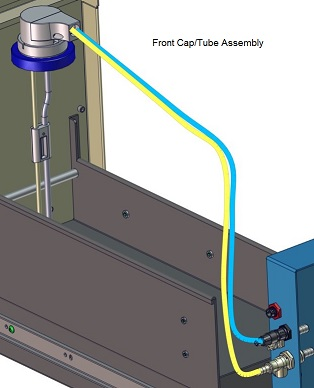
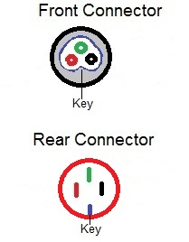
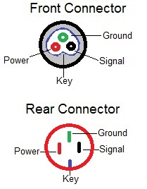

DxI Fluidics: Replacing Wash Buffer Cap/Tube Assembly with Pressure Sensor
Purpose
This procedure describes how to replace or install the Cap/Tube Assembly with Pressure Sensor.
Important: The Cap/Tube Assembly with Pressure Sensor can only be installed to a pre-configured DxI System that already has software 5.2 or higher loaded and the new Wash Buffer Supply Drawer installed. Refer to
Wash Buffer Supply Drawer Operating Principles and
Installing New Wash Buffer Supply Drawer documents for more details.
When to Perform
Perform this procedure when:
- Cap/Tube Assembly has:
- Broken or damaged cap housing.
- Broken or damaged cap.
- Broken or damaged draw tube.
- Broken or damaged holding clips.
- Broken or damaged tube/sensor connectors.
- Kinked or damaged sensor tube.
- Calibration failure or defective pressure sensor.
Caution: Use proper PPE when performing this procedure and handle the Cap/Tube Assembly with care to avoid buffer contamination and damages to the cap/tube components.
Note: There are two types of Cap/Tube Assembly and they are not interchangeable:
- Front Cap/Tube Assembly has different connectors and labels compare to the Rear Cap/Tube Assembly:
- Old revision:
- Pressure sensor connector has black color coded lock cap and female connector with three small pin holes.
- Tube connector has female quick connect.
- The label near the cap contains the assembly part number.
- New revision:
- Pressure sensor connector has black color coded lock cap and female connector with three small pin holes.
- Tube connector has female quick connect.
- The label near the cap contains the assembly part number and the assembly position "Front."

- Old revision:
- Rear Cap/Tube Assembly has different connectors and labels compare to the Front Cap/Tube Assembly:
- Old revision:
- Pressure sensor connector has red color coded lock cap and male connector with three small pins.
- Tube connector has male quick connect.
- The label near the cap contains the assembly part number.
- New revision:
- Pressure sensor connector has red color coded lock cap and male connector with three small pins.
- Tube connector has male quick connect.
- The label near the cap contains the assembly part number and the assembly position "Rear."
 Note: Both sensor connectors are keyed and require to:
Note: Both sensor connectors are keyed and require to:
- Turn the lock-cap counter-clock-wise to loosen the sensor connector.
- Turn the lock-cap clock-wise to tighten the sensor connector.
- Old revision:
-
Remove the Cap/Tube Assembly.
-
Remove the tubing quick connect or disconnect and pressure sensor connector on the Bulk Fluid Tray Interface PCB cover.
Note: Bulk Fluid Tray Interface PCB cover has designated input connections.

- Rear Sensor input connection has red color coded nut and female connector with three small pin holes.
- Front Sensor connection has black color coded nut and has male connector with three small pins.
- Rear Tube connection is female.
- Front Tube connection is male.
-
Remove the tubing quick connect or disconnect and pressure sensor connector on the Bulk Fluid Tray Interface PCB cover.
-
Install the Cap/Tube Assembly.
Note: Handle the Cap/Tube Assembly with care to avoid buffer contamination and damages to the cap/tube components.
- Inspect the Cap/Tube Assembly before installing to ensure:
- Cap/Tube Assembly is the correct assembly.
- No broken or damaged cap, draw tube, sensor tube, clip holders, sensor connector, and tubing connector.
- Verify Pressure Sensor's resistance before installing:
- Use a meter to check to the resistance of the sensor.

- Turn the meter to the horse shoe sign for reading resistance.
- Attach the Black Lead to the Green (Ground) pin or hole.
- Attach the Red Lead to:
- Black (Signal) pin or hole.
- Red (Power) pin or hole.
- Confirm the resistance readings on the table below.
Note: If the sensor has a short or open circuit:
- Do not install the Cap/Tube Assembly.
- Replace the Cap/Tube Assembly.
Table 60: Pressure Sensor Resistance Guidelines Sensor Circuit Resistance Normal Red (Power) pin or hole ~ 200k ohms
Black (Signal) pin or hole ~ 100 ohms
Short Red (Power) pin or hole ~ 0 ohm
Black (Signal) pin or hole ~ 0 ohm
Open Red (Power) pin or hole ~ Mega ohm
Black (Signal) pin or hole ~ Mega ohm
- Use a meter to check to the resistance of the sensor.
-
Gently connect the Cap/Tube connectors to input connections on the Bulk Fluid Interface PCB Cover.
Note: Ensure the Cap/Tube Assemblies are properly connected.
- Rear Cap/Tube Assembly connects to the red rear sensor connector and rear tube connector.
- Front Cap/Tube Assembly connects to the black front sensor connector and front tube connector.
- Inspect the Cap/Tube Assembly before installing to ensure: